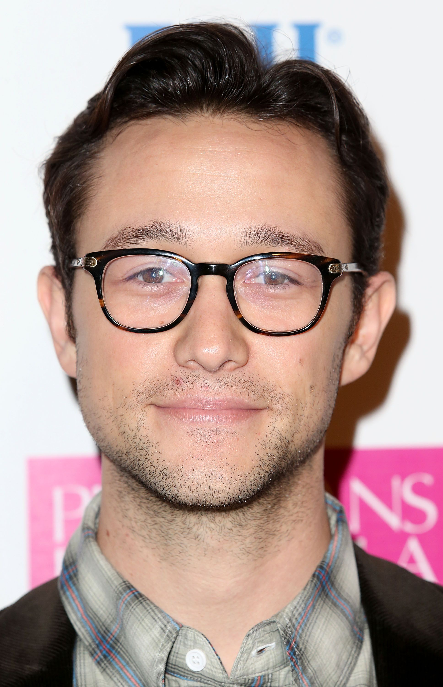
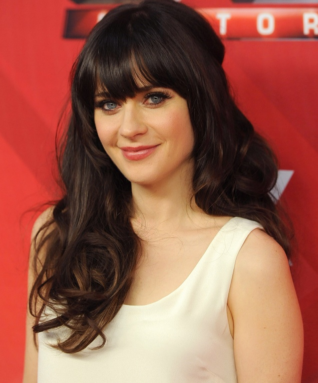
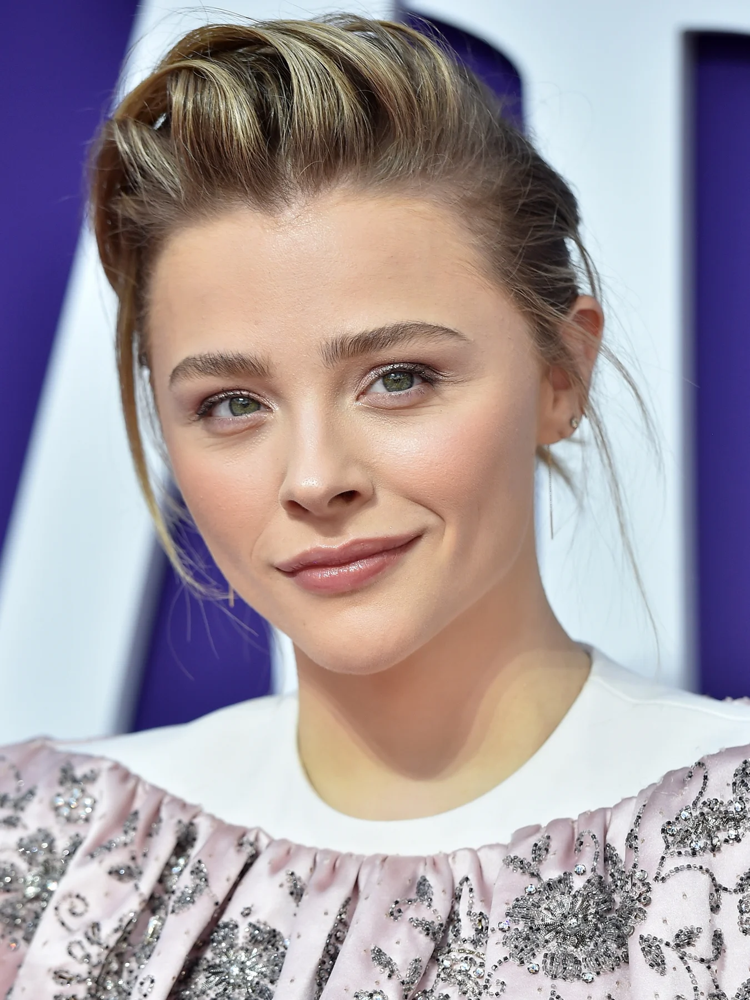
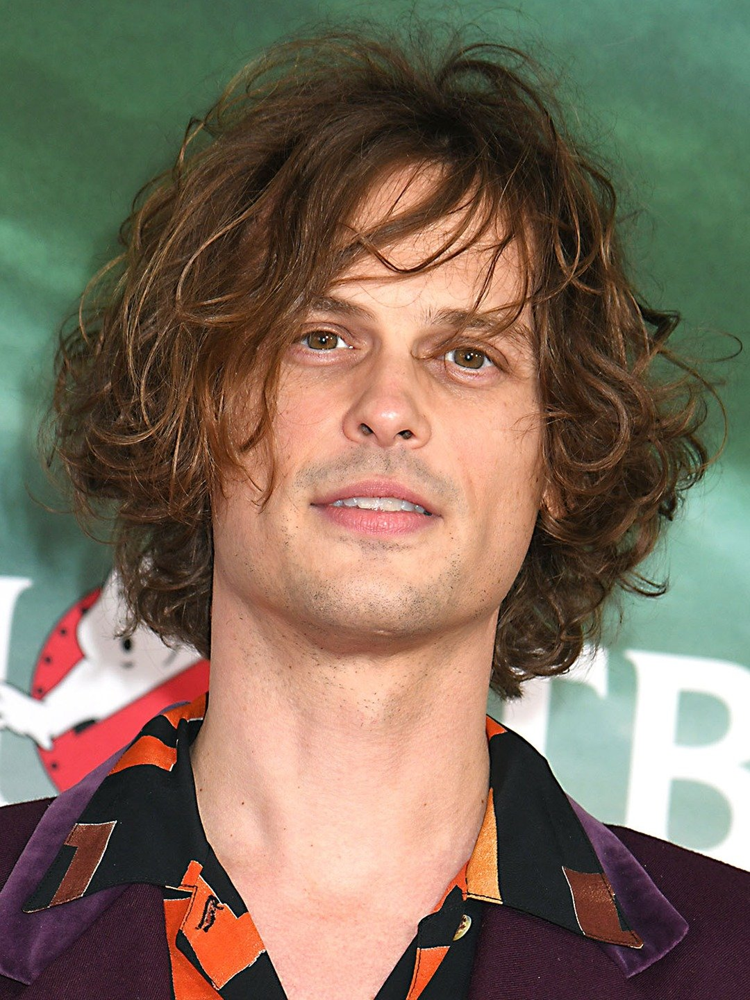
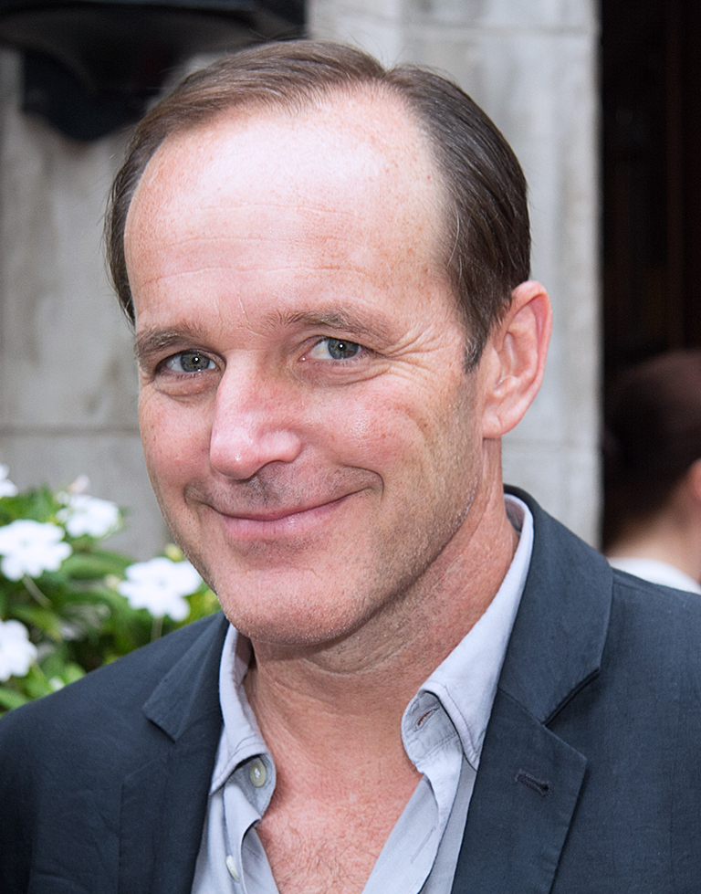
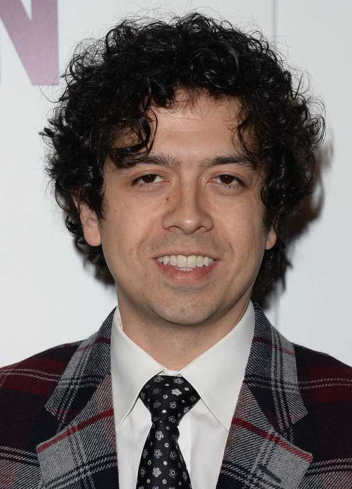

Estrenada:
Es una película estadounidense de 2009 del género comedia dramática dirigida por Marc Webb, escrita por Scott Neustadter y Michael H. Weber, y producida por Mark Waters. Fue protagonizada por Joseph Gordon-Levitt y Zooey Deschanel, y presenta una narrativa no lineal, cuya historia está basada en el protagonista masculino y su punto de vista de un romance fallido.
Como película independiente, fue distribuida por Fox Searchlight Pictures y se estrenó en el Festival de Cine de Sundance. Consiguió críticas positivas y se volvió un éxito sorpresa, recaudando más de sesenta millones de dólares en total, sobrepasando los siete millones y medio de su presupuesto. Muchos críticos la calificaron como uno de las mejores cintas de 2009
Ésta es una historia de chico encuentra chica, así da comienzo el relato del irónico y meticuloso narrador de 500 días juntos. Un desenfrenado e impredecible año y medio del atascado lío amoroso, que no hay por donde cogerlo, de un joven.
Tom, el chico, aún sigue creyendo, incluso en este cínico mundo moderno, en la noción de un amor transformador, predestinado por el cosmos y que golpea como un rayo sólo una vez. Summer, la chica, no cree lo mismo. Para nada. Pero eso no impedirá que Tom deje de perseguirla, una y otra vez, como un moderno Don Quijote, con todo su poder y valor. De pronto, Tom se enamora no sólo de la adorable, lista e inteligente mujer, no es que a él le importe nada de eso, sino de la idea misma de Summer, la idea misma de un amor que sigue teniendo el poder de sacudir el corazón y detener el mundo.
La mecha se enciende desde el primer día, cuando Tom (Joseph Gordon-Levitt) un arquitecto en ciernes convertido en un sensiblero escritor de tarjetas de felicitación, se encuentra con Summer (Zooey Deschanel), la bella y fresca nueva secretaria de su jefe al bajar del avión proveniente de Michigan. Aunque aparentemente está fuera de su alcance, Tom pronto descubre que tiene un montón de cosas en común con Summer. Después de todo, a los dos les encanta The Smiths. Los dos tienen debilidad por el artista surrealista Magritte. Tom una vez estuvo viviendo en Jersey y Summer tiene un gato que se llama Bruce. Como Tom dice meditando, "somos compatibles hasta en lo último".
Hacia el día 31, las cosas siguen adelante, aunque sea de manera "informal". El día 32, Tom es irreparablemente golpeado, y sigue viviendo en un mundo fantástico y vertiginoso con Summer en su mente. Hacia el día 185, las cosas ya están en un grave limbo, pero no sin esperanza. Y a medida que la historia rebobina hacia atrás y hacia delante a través del "otra vez bien, otra vez mal", a veces dichoso, a veces tumultuoso flirteo de Tom y Summer, la historia cubre el mareante territorio por entero, desde el enamoramiento, las citas y el sexo hasta la separación, las recriminaciones y la redención en un torbellino de saltos en el tiempo, pantallas divididas, números de karaoke y entusiasmo cinematográfico, todo lo cual se suma al caleidoscópico retrato del por qué y el cómo seguimos esforzándonos de modo tan risible y rastrero para encontrar sentido al amor y esperar convertirlo en realidad.
|  | En la historia, Tom Hansen (nombre del personaje que interpreta Jopseh Gordon-Levitt) es un godín común y corriente con dificultades para encontrar el amor, pero todo cambia cuando entra una nueva compañera a su oficina y nuestro “héroe” empieza a escuchar campanas de boda en el fondo. Pero ella, Summer, no tiene los mismos planes y aunque poco a poco la convence de darle una oportunidad y empiezan una relación, al final las cosas no salen como él quiere y lo que vemos es un romance fallido del que muchos aman culpar al personaje de Zooey Deschanel (aka Summer), pero Jopseh Gordon-Levitt sabe que no es así. |
|  | Con respecto al personaje que interpreta (Summer): Creció... en Shinnecock, Michigan, donde era la chica más genial y bonita de la escuela. Sus padres se divorciaron, lo que la llevó a creer que no existe el amor verdadero. Como lo describe el narrador: “Desde la desintegración del matrimonio de sus padres, ella solo amaría dos cosas. El primero fue su cabello largo y oscuro. La segunda fue la facilidad con la que podía cortarlo y no sentir nada”. Profesión... asistente en una empresa de tarjetas de felicitación. Es bastante profesional y se describe a sí misma como “muy ordenada y organizada”. Desafío... descubrir lo que quiere en la vida. Desde el primer día de su relación, Summer cree que Tom no es lo que la hará completamente feliz. Todavía tiene que descubrir exactamente lo que debería salir de una relación, o exactamente lo que quiere hacer con el resto de su vida. Pero ella no tiene prisa y definitivamente está disfrutando el viaje. Personalidad… alegre, divertida, reflexiva. Es el tipo de persona que se aferra a las letras de las canciones y las convierte en parte de su vida, pero no se apresura a idealizar sus experiencias. Es pragmática y racional, no dada a vuelos de fantasía o arrebatos emocionales. |
|  | A la actriz Chloë Grace Moretz le tocó interpretar a Rachel Hansen, la hermana pequeña de Tom Hansen (Joseph Gordon-Levitt), y es la encargada de darle consejos de amor, principalmente para poder conquistar a al personaje interpretado por Zooey Deschanel. Una especie de cupido y sabiduría encarnada en una pequeña niña con cara angelical. “Mira, sé que crees que ella era la indicada, pero yo no. Ahora, creo que solo estás recordando las cosas buenas. La próxima vez que mires hacia atrás, realmente pienso que deberías mirar de nuevo”, fue una de las opiniones que más recuerdan los que vieron la película. Otra fue:“El hecho de que a ella le gusten las mismas tonterías bizarras que a ti no significa que sea tu alma gemela”. Toda esta sapiencia saliendo de una hermanita menor suenan muy potente, y si a eso le sumamos su tierna apariencia, resulta un combo para derretir corazones. Tenía el pelo rubio y muy lacio, el cual usaba con una raya al costado y casi siempre detrás de las orejas. Su aspecto era muy simple y cómodo, como el de una niña de su edad: nada de maquillaje, playeras de manga corta y pantalones rectos, tal y como se usaba en esa época. |
|  | Paul (personaje que interpreta el actor Matthew Gray Gubler) es amigo de Tom. No sabemos mucho más sobre él aparte del hecho de que conoció al amor de su vida hace mucho tiempo, en la escuela primaria. Paul no tiene muchas escenas, aparte de aquellas en las que está consolando a Tom por su ruptura. Pero Paul tiene un fragmento de sonido de medio minuto que, para mí, fue uno de los momentos más profundos de la película. Sí, el enfoque de la película está en Tom y viajamos con él a través del amor y la angustia, el anhelo y la realidad, los recuerdos y el futuro, pero las ideas de amor que tienen tanto Summer como Tom, bueno, son interesantes pero también son los extremos Las ideas de amor que cada uno cree personifica el tipo de amor que vemos en los programas de televisión y en las películas: muestran ambos extremos del espectro y creo que por eso, la audiencia generalmente se siente más atraída por cada lado. Pero Paul, Paul tiene lo que es correcto, lo que es real. |
|  | Clark Gregg interpreta a Vance, el jefe de la empresa para la que trabaja el protagonista Tom Hansen. Se definiría como una persona empática y algo timida. Tiene pocas líneas de guión pero es importante en la película para hacer visible el cambio de actitud del protagonista mientras esta sucede. |
|  | Geoffrey Arend interpreta a McKencie, otro amigo y además compañero de trabajo de Tom. Es una persona que se podría considerar algo irresponsable, extrovertida y despreocupada. Es el que ayuda a Tom a declarar sus sentimientos hacia Summer e intenta hacer de Celestina. |